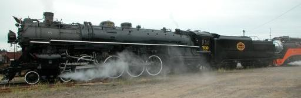

Same image used for Baldwin # 62171
Last updated: 24 June, 2015
| Builder: | Baldwin Locomotive Works, Philadelphia, PA |
| Build #: | 25717 |
| Date: | 1905 |
| Engine #: | 197 (3203) |
| Railroad: | Oregon Railroad & Navigation (Union Pacific) |
| Website: | www.orhf.org |
| Email: | info@orhf.org |
| Location: | Oregon Rail Heritage Center, 2250 SE Water Ave. Portland, OR 97214 |
| GPS: | 45.505946, -122.660664 Parking under Hwy-99 at end of Grand St. |
| Phone: | 503-233-1156 |
| Status: | Restoration |
| Notes: | Donated 1958 Thursday - Sunday (as of Sep, 2025) 1:00 - 5:00pm Free Admission, Free Parking |
Built in 1905 by Baldwin Locomotive Works as a 4-6-2 “Pacific” type locomotive for the E. H. Harriman rail empire that later merged into the Union Pacific, she’s 79′ long and, with 200 psi boiler pressure and 76″ diameter drivers, is capable of sustained speeds of 80 mph.
This treasure of the early 20th Century era of steam locomotives arrived in Portland just in time for the 1905 Lewis & Clark Centennial Exposition, just 17 months before the Wright Brothers first flew at 9.8 mph, when Teddy Roosevelt was President and 3 years before Henry Ford rolled out his first Model T. She then went on to serve Portland commerce for over 50 years before retirement in the 1950s. Residing as only a display piece in Oaks Park like her sisters since 1958, in 1996 she was moved to the Brooklyn Roundhouse where she is undergoing restoration today by the all-volunteer Friends of the OR&N 197.
| Class: | P-2 |
| Gauge: | 4'-8½" |
| F.M.Whyte: | 4-6-2 |
| Drivers: | 77” |
| Gear Ratio: | |
| Tractive Effort: | 30,000 lbs |
| Weight: | 200 tons |
| Weight on Drivers: | |
| Length: | 79’ |
| Boiler: | |
| Cylinders: | |
| Top Speed: | |
| Fuel: | |
| Fuel Type: | Oil |
| Water: | |
| Steam psi: | 200 psi |